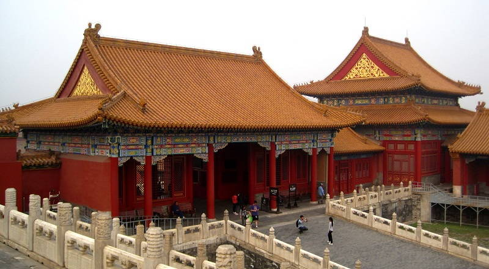
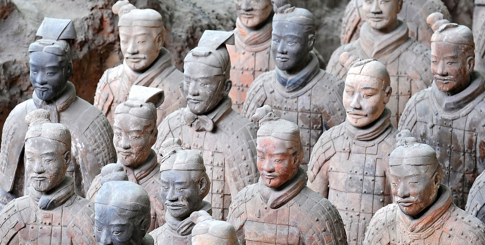
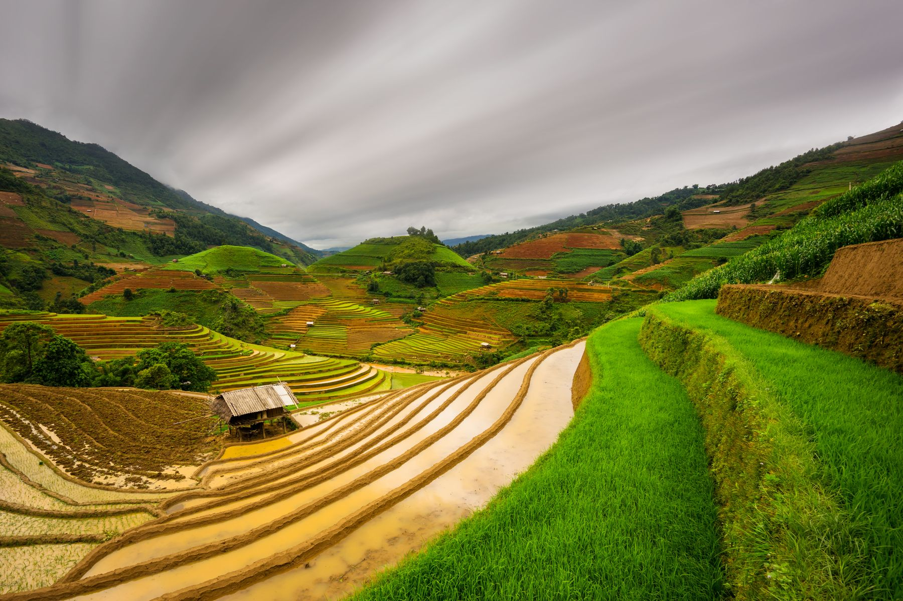
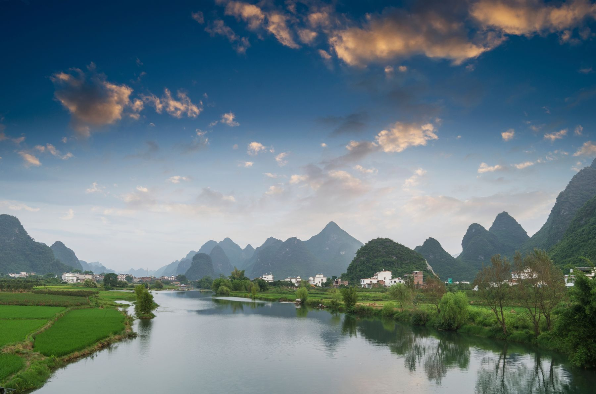
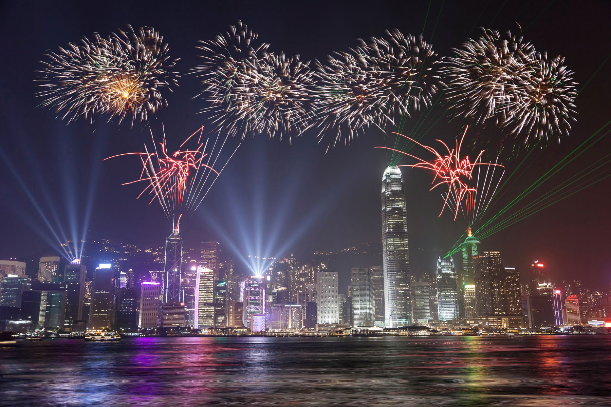
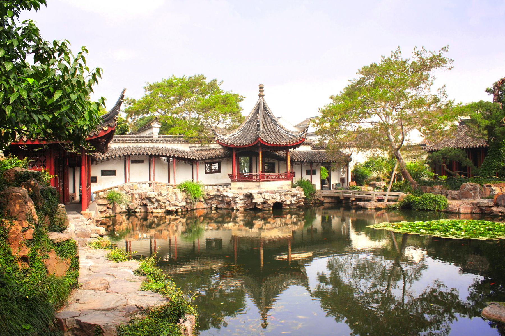
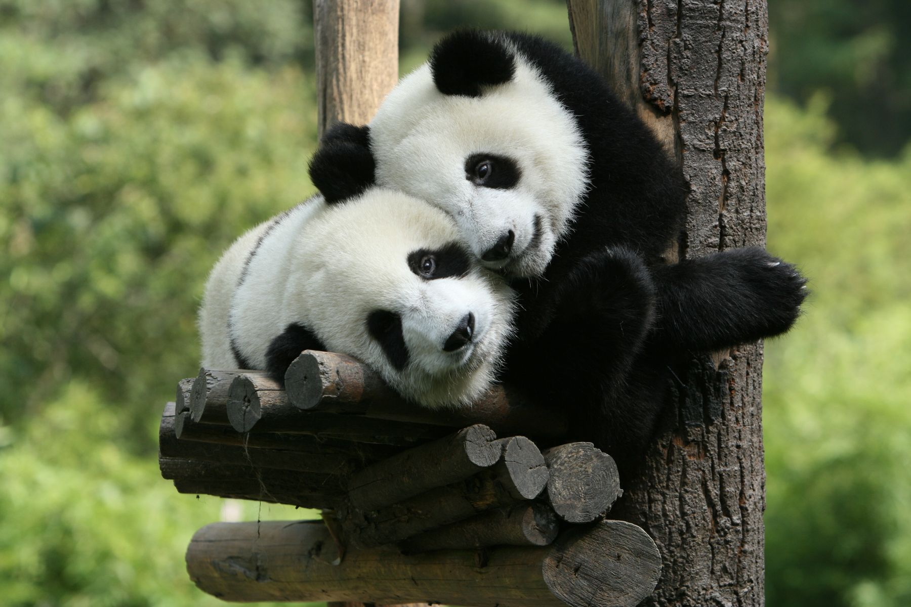

1. Pekín

Es indiscutible, la capital de China es una ciudad grandiosa y no solo por su descomunal densidad poblacional (más de 22 millones de habitantes) sino por la ingente cantidad de puntos de interés a visitar. Modernidad y tradición se mezclan sin apenas darte cuenta en Pekín y podrás encontrarte con maravillas arquitectónicas tales como el Templo del Cielo o la Ciudad Prohibida; lugares con muchísima historia como la Plaza de Tian’anmen o el Mausoleo de Mao Zedong junto a rascacielos y tiendas y restaurantes de vanguardia que te dejarán alucinando.
2. Xi’an

Como si contemplar un ejército del siglo III a.C. de más de 8.000 figuras de terracota a tamaño real, con su séquito de caballos y carrozas no fuese excusa suficiente para viajar hasta Xi’an, esta ciudad se considera el extremo oriental de la famosa Ruta de la Seda, con todo lo que ello conlleva. En Xi’an podrás encontrar la China más tradicional representada por una bonita muralla y las torres grandiosas de la Campana y el Tambor, así como un barrio musulmán tan auténtico que no sabrás si estás en el gigante asiático o en Marruecos
3. La gran muralla China

Al contrario de lo que dice el mito, la Gran Muralla no se ve desde el espacio; sin embargo, la espectacular muralla de más de 21.000 kilómetros de longitud es una de las atracciones principales de China. Esta fortificación comenzó a construirse en el siglo V a.C. pero siguió ampliándose y reconstruyéndose hasta el siglo XV para la protección ante las constantes amenazas de invasión. A pesar de que muchas zonas se han visto fuertemente dañadas, la muralla sigue en pie y puede visitarse fácilmente desde Pekín. El tramo mejor conservado y, por tanto, más turístico es el de Badaling (a 80 kilómetros de la capital) pero si tienes ganas de más aventura no dejes de visitar las zonas de Simatai y Jinshanling con zonas aún sin restaurar.
4. Shanghái

El skyline de Shanghái es uno de los más impresionantes del mundo, sobre todo si se contempla desde el Bund, el malecón con aires coloniales de la ciudad. En la segunda capital de China no dejes de pasear por la bulliciosa y moderna Nanjing Road (la arteria comercial de Shanghái) pero también visita la Ciudad Antigua y adéntrate en los Jardines de Yuyuang, unos preciosos jardines privados del siglo XVI que te darán ganas de fotografiar en cada esquina.
5. Buda de Leshan
Al lado de un acantilado, en la confluencia de los ríos Dadu, Jianng y Qingyi y a unas cuantas horas de Chengdu, se encuentra la estatua de piedra de Buda más alta del mundo. El Buda de Leshan alcanza los 71 metros de altura y se esculpió en el siglo VIII con el objetivo de que vigilase el cauce de los ríos tan bravíos que se tragaban cualquier barco que navegase por ellos. Actualmente puede visitarse su templo anexo, el de Dafo, en el que podrás encontrar más estatuas budistas para después contemplar con tus propios ojos al grandioso Buda.

6. Yunnan

Las ciudades antiguas de Dali, Shaxi, Lijiang o Shangri-La son algunos de los regalos que esta región tiene si te animas a visitar el suroeste de China. Pero no solo eso, las terrazas de arroz de Yuangyang destacan por ser unas de las más bonitas de Asia y la Garganta del Salto del Tigre, el cañón de río más profundo del mundo, también pueden encontrarse en Yunnan. La cercanía de esta zona de China al Sudeste Asiático y a las montañas del Tíbet resulta en una interesante combinación de minorías étnicas que pueblan sus ciudades y valles dando alegría y color y entusiasmando al viajero con sus trajes tradicionales y costumbres.
6. Yangshuo

Las curiosas formaciones montañosas repletas de vegetación a las orillas del río Li atraen a miles de mochileros cada año, que acuden encantados por el paisaje y por las actividades que Yangshuo ofrece. Además del popular rafting en barcas de bambú, conviene reservarse unos días por la zona para pasarlos paseando en bicicleta entre arrozales, practicando escalada o visitando algunas de las bonitas cuevas en las montañas.
8. Hong Kong

Los más urbanitas disfrutarán como enanos de Hong Kong, una de las ciudades más modernas del mundo y repleta de contrastes. Además de contemplar los fascinantes rascacielos iluminados por su espectáculo de luces diario a las 20:00 desde la Avenida de las Estrellas, no deberías dejar Hong Kong sin subir al Victoria Peak, el monte más alto de la ciudad, al caer el atardecer. Guarda unos días de tu viaje para vivir como un auténtico hongkonés y descubre la comida cantonesa en los mercadillos nocturnos, sal de fiesta en Lan Kwai Fong o sube y baja una y otra vez en las escaleras más largas del mundo, The Central-Mid-Level escalators.
9. Suzhou

“En el cielo está el paraíso y en la tierra están Suzhou y Hangzhou”, así reza un antiguo proverbio chino que describe a la Venecia china, Suzhou. A escasamente 30 minutos de Shanghái se sitúa una ciudad llena de canales, jardines y pagodas exquisitamente cuidados que convierten a esta ciudad en tu escapada perfecta de la jungla de rascacielos de su vecina.
10. Chengdu

En Chengdu abundan los centros de conservación y cría de estos animales en peligro de extinción, en muchos de ellos podrás ver a los osos panda en semi-libertad rodeados de bambú. Ve bien temprano por la mañana, que es cuando están más activos, y no dejes de informarte sobre estos lugares antes de ir, el buen estado de los animales es lo primero.